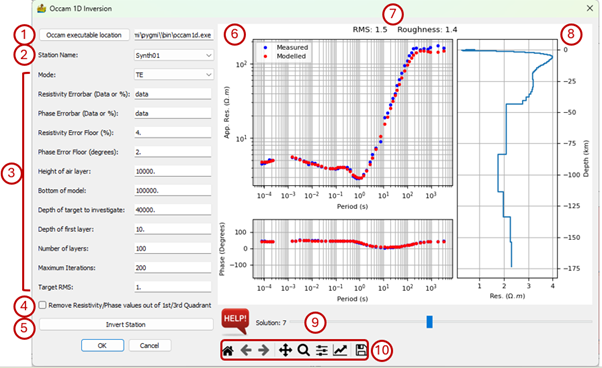

Occam 1D Inversion¶
This module applies Occam 1D inversion to EDI data (Constable et al., 1987). Multiple solutions are generated.
The module uses the OCCAM1DCSEM code distributed by the SCRIPPS Institute of Oceanography (https://marineemlab.ucsd.edu/Projects/Occam/1DCSEM/) (Key, 2009). This package requires three input files: IterationFile, ModelFile, and DataFile (all of which are generated by MTpy automatically). A folder labelled by the mode (see the options below) is created as a subfolder in the input EDI file folder and contains these files. This new folder contains the Occam 1D iteration (.iter) and output response (.resp) files. Full model descriptions can be found in these files.
The Occam 1D Inversion interface requires the following inputs:
Occam executable location – If you get the error message No Occam1D executable found, use this option to navigate to the folder where it is located. You may need to obtain the source code from https://marineemlab.ucsd.edu/Projects/Occam/1DCSEM/ and compile it. It should be called occam1d for non-Windows platforms and occam1d.exe for Windows.
Station Name – Used to select a station, which is then displayed in the graph.
Modelling parameters:
Mode – Can be transverse electric (TE), transverse magnetic (TM) or determinant of the impedance tensor (DET) converted to apparent resistivity and phase
Resistivity Errorbar – Either specified as ‘data’ which means it will be determined from the data, or in %.
Phase Errorbar – Either specified as ‘data’ which means it will be determined from the data, or in %.
Resistivity Error Floor – In %.
Phase Error Floor – In degrees.
Height of air layer – In metres.
Bottom of model – In metres.
Depth of target to investigate – In metres.
Depth of first layer – In metres.
Number of layers – Refers to number of model layers
Maximum Iterations – Maximum number of iterations Occam uses to compute
Target root mean square (RMS) – Target RMS misfit.
Remove resistivity/phase values out of 1st/3rd quadrant – The phase must be between 0° and 90° for the algorithm to work. When this is option is selected, 180° are added to phases in the 3rd quadrant, shifting it to the 1st quadrant.
Invert Station – Calculate the Occam 1D inversion for the current station.
Window showing the apparent resistivity and phase versus period graphs for the observed and modelled data.
The RMS and Roughness parameter of the inversion result. The inversion is regularised to find the smoothest model rather than the best fit using the roughness parameter. Smaller values indicate a smoother model (Constable et al., 1987).
The inversion result displayed in a depth versus layer resistivity graph.
Slider to move through the multiple solutions that are generated.
Standard image display settings that allow the user to zoom into specific areas of the image, move the zoomed in area around, return to the full image, save the image, etc.

The inversion results are stored in the folder that is automatically and consists of the station name and the modelling mode, e.g. Synth01-TE.
References¶
Key, K., 2009, 1D inversion of multicomponent, multi-frequency marine CSEM data: Methodology and synthetic studies for resolving thin resistive layers: Geophysics, 74, F9-F20.
Constable, S. C., R. L. Parker, and C. G. Constable, 1987, Occam’s inversion - A practical algorithm for generating smooth models from electromagnetic sounding data, Geophysics, 52 (03), 289-300.